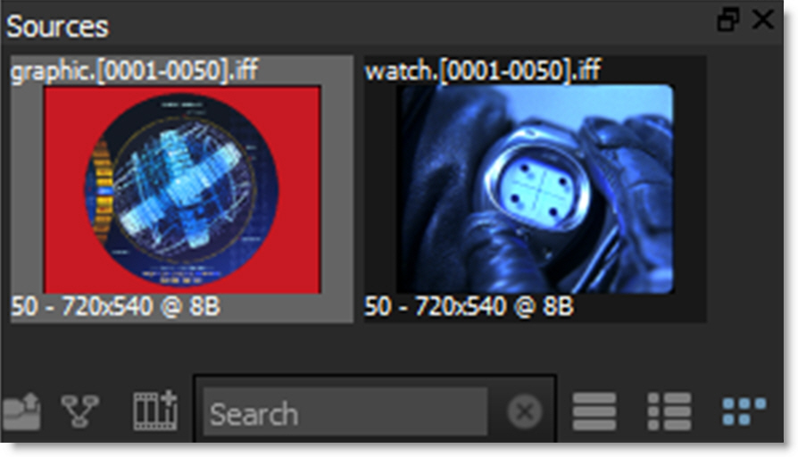
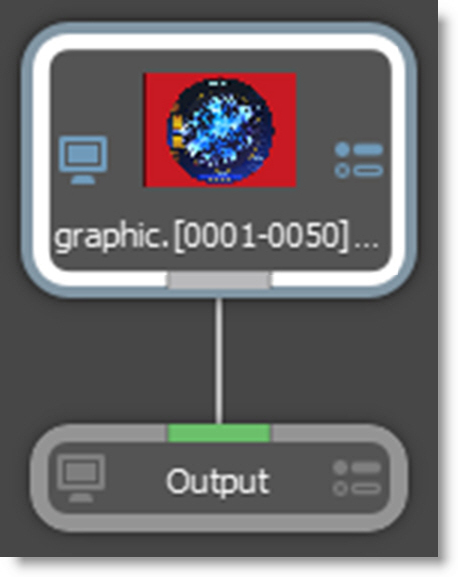
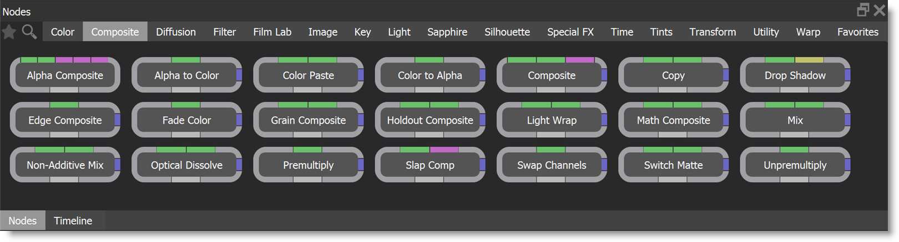
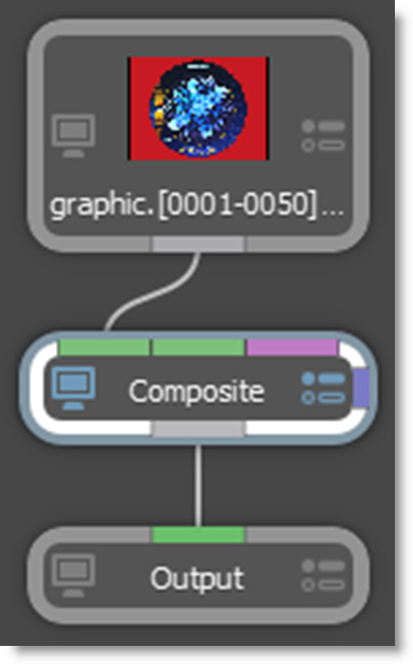
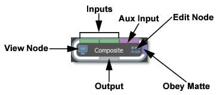
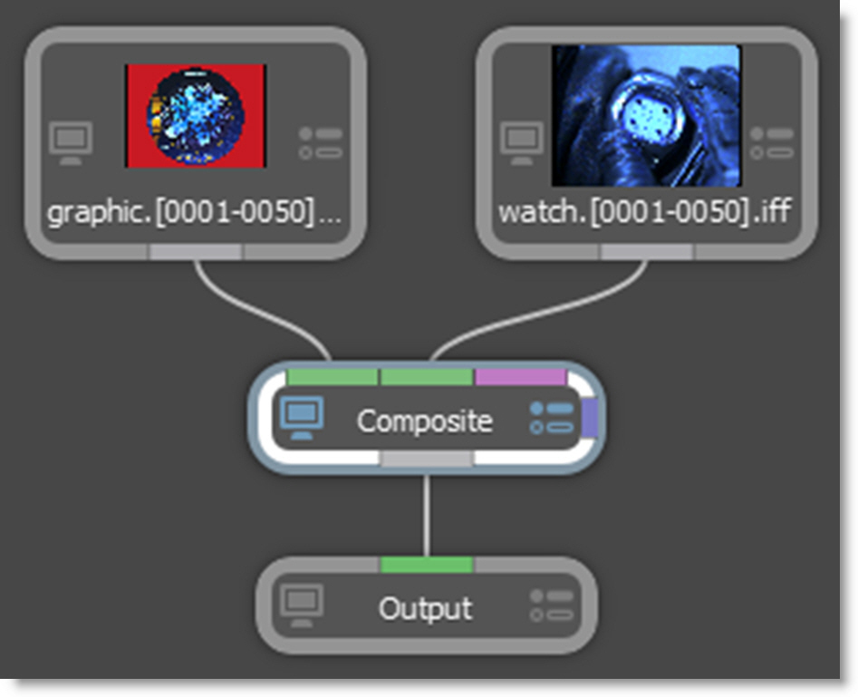
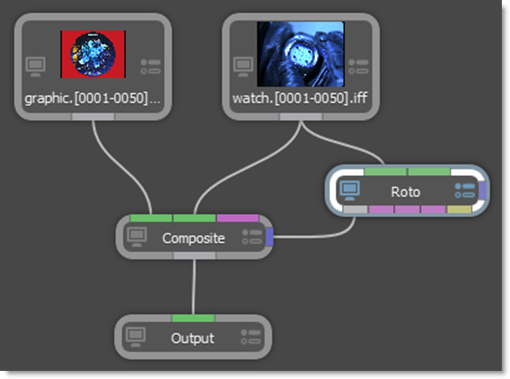
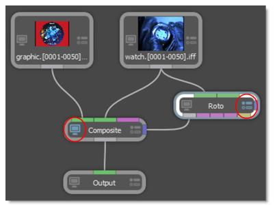

Compositing and Multiple Nodes
1 Import some footage conducive to compositing, for instance, a foreground RGBA and a background clip.
2 Highlight the foreground RGBA clip in the Sources window.
3 Press Ctrl/Cmd-N and create a session using a Composite template.
The source node is automatically connected to an Output node and the Composite workspace is selected which provides ample space to create trees.
4 Select the Nodes tab at the bottom of the screen.
Silhouette is a node based system and different nodes are used for various functions.The node groups are displayed and are organized into Color, Composite, Diffusion, Filter, Film Lab, Image, Key, Light, Silhouette, Special Effects, Time, Tints, Transform and Warp groups.
You can search for nodes by clicking the Search icon at the top left of the Nodes window. Type in the node that you want to search for and it will appear. Click the Search icon when done to return to the normal Nodes window view.
5 Select the Composite category and the nodes for that group are displayed.
6 Click and drag a Composite node to the Trees window and drop it onto the existing node wire between the source and output nodes.
The node wire will automatically grab on to the Composite node. In case you were wondering, the different colored bars on the border of the node allow you to connect into and out of it.
The Composite node can use either two or three inputs.
• Two inputs: Foreground RGBA and Background
• Three inputs: Foreground, Background, Matte
Note: You can change Composite’s input order with the User Interface > Trees > Input Order preference. By default, FG, BG is selected, but you can change it to BG, FG if you’d like.
7 Drag your background clip from the Source window to the Trees window.
8 Click on the background clip’s output port and drag to the Composite node’s background input (middle input).
Silhouette is a straight, unmatted compositor and its composite nodes expect unpremultiplied images. In addition, it is best practice to unpremultiply before color correcting premultiplied images so as to avoid unexpected results. If you are working with premultiplied images, you have the following options:
• In the Source parameters, identify the alpha as Premultiplied. This will unpremultiply it.
• Unpremultiply the image within the Composite node.
• Use a Composite > Unpremultiply node before the premultiplied image hits the Composite node.
9 Single-click in the center of the Composite node to view and edit it.
When a node is single-clicked, a couple of things happen. First, it is loaded into the Viewer so you can see its affect on the image. Second, its parameters are loaded into the Node parameters window so its controls can be edited. You can tell which node is being viewed and edited by the state of the View and Edit Node icons on the node. They are colored blue when enabled.
When you have multiple nodes, you can view one node while editing another. Just click on either the View Node or Edit Node icons. Let’s connect another node.
10 From the Image tab, click and drag a Roto node to the Trees window. Press the Ctrl/Cmd key before dropping it onto the background source clip.
This creates a new branch.
11 Hook the Roto node’s output (far left output port) to the Obey Matte input (right edge of node) of the Composite node.
Whatever is plugged in to the Obey Matte input will constrain or limit the effect of the node.
12 Click the View Node icon on the Composite node and the Edit Node icon on the Roto node.
This configuration will allow you to view the Composite node while editing the Roto node.
13 Click the Circle icon located on the left side of the Viewer and drag out a circle over a portion of the foreground that is being composited.
14 Click the Edit icon on the Composite node, switch to the Obey Matte tab in the Node window and enable Obey.
Now, the composite only occurs in the area defined by the Obey Matte input.
For all the ways you can add and connect nodes, see the
Adding and Connecting Nodes sections for more information.